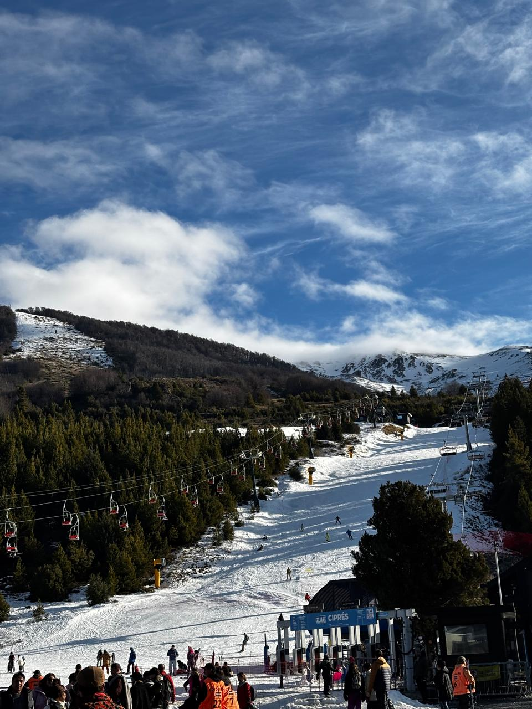

JANEIRO • 2022
Cerro Catedral
📍 Bariloche, ArgentinaA primeira vez que vi neve de verdade. Subi de teleférico, quase congelei as mãos e mesmo assim não queria descer. Chocolate quente no fim do dia valeu cada tombo.
★★★★★
Minha nota